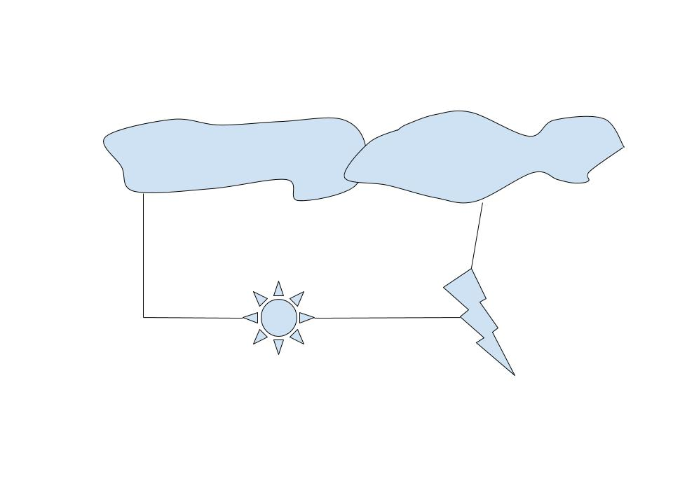
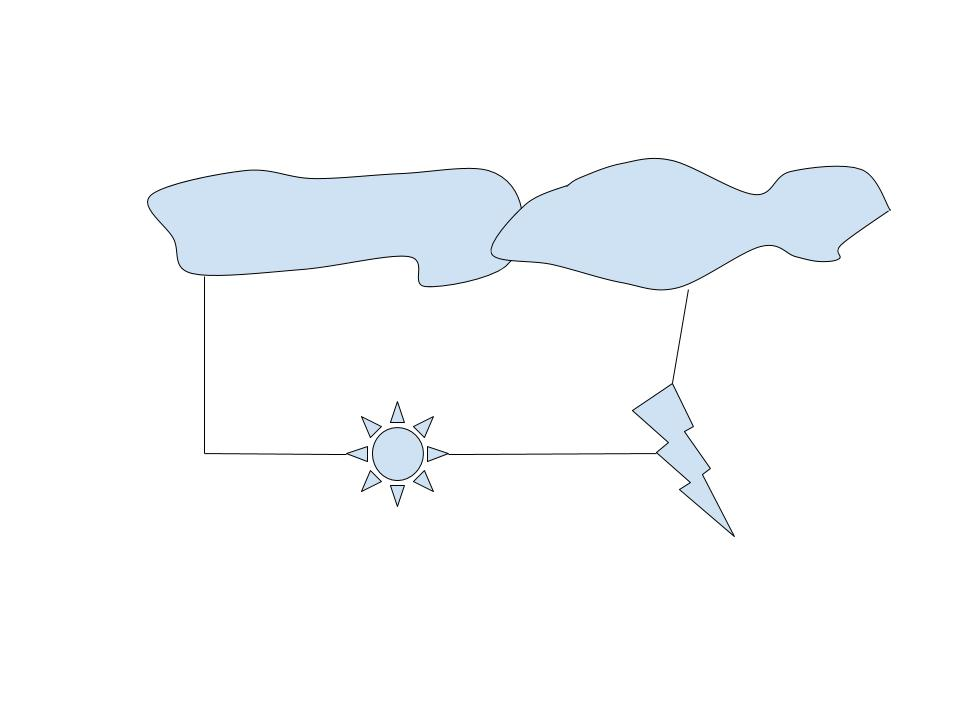

Physical Computing
February 1, 2018
Sensor Walk
Spend a day noting every time you encounter a sensor, touch screen, camera, or any other device with which you or someone interacting with you interacts.
Walking about, I interacted with the Tandon ID sensors which allow me to enter buildings, my apartment building sensors which allowed me to not only enter my building, but also the gym and mailroom. In regards to personal devices, I interacted with my phone, tapping it and pressing it in a way that allowed me to take photos and check social media as well as email. I also interacted quite heavily with my computer's trackpad which allowed me to click in various spots on my computer screen as well as show me all my windows and scroll.
There were four Tandon building sensors that all interacted differently. For the Jacobs Academic Building (JAB) sensor, the goal is to notify the person behind the desk that you attend the school in some capacity. If no one was behind the desk, it would be very easy to simply walk by the sensors with no consequence, as they don't even notice if somebody has not tapped them.
Then, there is the entrance and exit to 2 Metrotech, which behave differently from each other. To enter the building, one must tap their ID on a sensor at the top of the gate to pass. When the signal is received, the gates blocking entry or exit move out of the way, allowing the person to go through. However, when exiting, all it takes is for the sensor to notice that someone is there. It does not require a card swipe or any sort of NYU ID verification to allow someone passage. Lastly, to enter MAGNET inside 2 Metrotech, the person must tap the same NYU ID card as they did at the downstairs entrance, but MAGNET allows in only a selection of those people, as only people who have classes on that floor or are of the IDM Major are permitted.
While the card reader at MAGNET is the same model as the one at the entrance of JAB, different people are admitted. While the gates at 2 MT are different than the card reader at JAB, they allow in the same.
My building sensor is a little different. The sensor comes from a little blue poker chip like device that, when hit against a blinking sensor, lets you into the building, the gym, and the mail room.
February 8, 2018
DIY Switch
Sketch and Design 5 different custom switches using found materials, such as paper, cardboard, balloons, paper towel tubes, fabric, wood, string, etc. Then choose 2 (minimum) of them and transfer them into functioning DIY switches. Use a LED, appropriate resistors, 9 Volt battery and battery snap with your switch. One circuit must be a parallel circuit. The other a series circuit. It's up to you how many LED's and resistors that you want to use.
Switch 1
The first switch is a Magnetic Putty Switch. It is a series circuit that would light up an LED by having two groups of magnetic putty be attracted to each other over time. After a period of time, the putty groups would eventually meet and a complete circuit would be formed, allowing the LED to light up. The level of human interaction would be minimal but possible if a human was placing the groups of putty
 
Switch 2
The second switch is a Scissor Switch. It is also a series circuit that would light up an LED by having the tips of a pair of scissors connect. This would require a special pair of scissors as the rest of the scissors would have to be plastic or some other not conductive material. When a human closed the pair of scissors, the tips would meet and overlap, allowing the current to transfer from one scissor tip to the other and complete the circuit.
Switch 3
The third switch is a Christmas Tree Switch. It is a parallel circuit that would light up an LED along a certain path by connecting an led attached to a magnet to another magnet behind a drawing of a tree. When the magnets are connected, the LED at the top of the tree (yellow, like a star) will light up!
Switch 4
The fourth switch is a Projectile Switch. It is drawn here as a series switch, though it could easily be translated to parallel if you wanted to set it up with multiple arrows. The circuit relies on the connection between a target board and an arrow that would be shot from a bow. The tail end of the arrow would have LEDs that light up when the arrow reaches the target board.
This could also be easily changed to be a true parallel circuit if the LEDs were on the target board and changed depending on which ring of the target was hit. If it was a bullseye, the board would light green, if middle, then yellow, if on the outside, red. While it is not drawn this way in the sketch, it is definitely possible.
Switch 5
The fifth switch is a game board switch. It is a parallel circuit that would light up a speicifc LED along the bottom of the game board depending on which slot the ball went into. The game board is an upright board with pegs sticking out of it at uniform intervals. The ball would fall onto these pegs and then go either right or left and fall onto another peg. The ball would have a conuctive string on it, or, if the string was to get tangled up in the pegs, the circuit could be reworked so that the ball simply made a connection between the bottom of the final slot where the ball would land and the wall which would be the other side of the circuit. When the ball finally landed in a slot at the bottom, the LED underneath that spot would light up, signaling where the ball had landed!

The Created Switches
I struggled a lot in actually creating the circuits so I've only successfully created one so far. I combined aspects of many of the above designs. I counldn't find a way to use magnetic putty as a conductive material, so I decided to just use the magnetic aspect. I added the christmas tree paper design because why not. I taped conductive tape (that was also magnetic) to an LED and taped a magnet to a resistor. When the Christmas tree and the magnet block are close enough, the magnetism closes the gap and the LED lights up.
February 15, 2018
Fantasy Device
Create a mock-up design for a fantasy device. Use one of the storyboard templates provided to describe how this device looks and functions. This device can be simple or complex but should not be a simple add-on to an existing device. Think of the behaviors and capabilities that are needed. Be detailed. Let your imagination run wild. You will not have to make this device a reality.
My concept is a mechanical snowman that has the sole purpose of making other snowmen. Below is my initial concept.
The snowman machine consists of three interlocking metal "balls" with a seam down the middle. While the snowman will consntantly be covered in snow by either covering itself in a layer of snow or emitting frozen droplets onto the metal frame. The eyes, appearing as black buttons, will have a camera in them and the snowman will analyze the area around it and look for carrots, rocks, anything that acts as snowman decor as well as create snowmen where there are none. The carrot and body buttons have small openings that emit the snow covering around each of the objects. The middle three buttons are also dials controlling mode, size of snowman, and packing density of the snow. The bottom of the snowman has a "rolling belt" movement system that gives it traction and the surface area allows it to traverse the snow without sinking. Right above the belt is an closed compartment with a power cord that allows the snowman to be plugged in to charge. The arms look very little like a snowman's while there are two appendages opposite each other and tilting up on either side of the middle ball of the snowman, the arms are made of bendy metal and the hands consist of contracting metal strips, covered in rubber, that allow the snowman to pick up snow and then condense it into a snowball. The hands also have snow emitters to build up the size of the snowman, although it can also roll the snowball around in the snow to build up the size of the snowball if there is snow on the ground around it. The top of the snowman has a hat which holds water if filled from the top to allow the snowman to emit and freeze snow. The top of the hat also has solar panels to allow the snowman some charging power while the sun is out.
The snowman has two modes: summer and winter. In the summer mode, the snowman generates snow from the water hat, while in the winter mode, the snowman priorizies attaining snow from the environment around it and only generates snow if needed.
As previously mentioned, the interface is a series of dials on the middle ball of the snowman. The top dial allows the user to select summer or winter mode (or off, if the user doesn't want the snowman to be working), the middle dial allows the user to select whether they want small, medium, or large snowmen to be created, and the third button selects the snow density of the snowmen (whether its very light and delicate or very packed in and dense).
February 22, 2018
Cute & Unexpected Tricks
Create a physical computing project using both input and output. Your project should have at least 2 forms of output (not including the off state) based on 2 forms or levels of input. This does not mean that you must activate multiple things based on multiple sensors. Rather, that you are evaluating your input and adjusting your output as a result. You can use multiple inputs and outputs if you like. Your project must respond to a physical action or series of actions a person takes, and it must be amusing, surprising, or otherwise engaging. It doesn't have to be practical, or complex, as long it shows that you understand the basics of digital and analog I/O and how to use them. You could consider this a quick prototype for a much larger project, or a proof of concept.
This is a light sensor activated by a button that flashes different levels of light depending on how much light the photoresistor is recieving. If it's not recieving much light, only one LED (red) will blink. The more light is recieved, the more LEDs blink then light up. I was inspired by the Canon battery charging device, which blinks at a steady pace if the battery is low powered, blinks twice in rapid succession if its part way charged, and eventually has a solid light if the charging battery is full.
These were my initial notes on the project. I wanted originally to have the lights light up in different ways depending on a combination of inputs from both a photoresistor and a temperature sensor. I was having difficulty with this, and decided to scrap the temperature sensor and focus on the range of inputs from the photoresistor as they could be more easily manipulated along with the fact that I had worked with one in class, albiet quite quickly.
Originally I just made the project blink with the 3 LEDs so that I could make sure the Arduino output was working, and it was. Then I tried to wire the breadboard for the photoresistor, and I did it incorrectly. I initially thought that I had to connect my inputs and outputs in some way so that they could communicate with each other instead of viewing the Arduino as the communicator between both of them.
With help, I was able to fix this, and wire the board so that the photoresistor and the LEDs were wired independently of each other. I also intended to add a tilt switch, as detailed in the first pages above, but was confused as to its orientation and what numbers I was looking for in regards to it being read, so instead I decided to implement a button for a switch. It's neither imaginitive or creative, but it works and at the moment that's the thing I need most of all.
Below are my final schematics and video demonstrating the creation, as well as the code I wrote for it.


February 22, 2018
Luma Legacy
Challenge here.
I worked with a classmate during the class to develop code as an answer to the above.